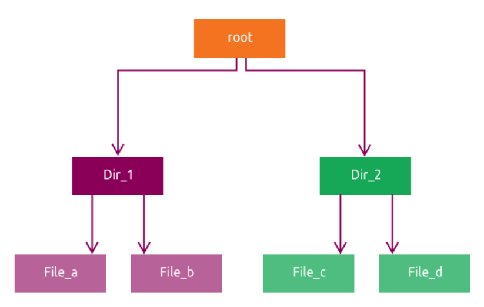
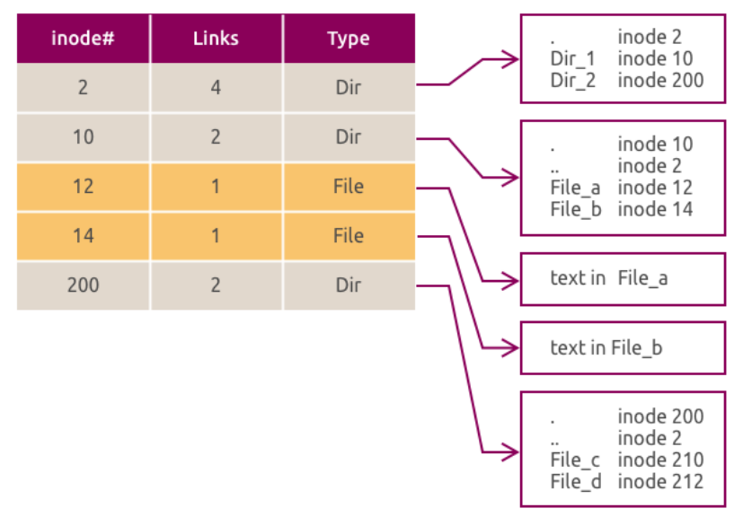

Advanced Filesystem Concepts¶
This chapter introduces filesystem internals, ext4 administration, extended attributes, ACLs, and special permission bits.
In this chapter you will:
- describe how Linux filesystems organize metadata and data
- inspect and tune
ext4filesystem settings - manage extended attributes and POSIX ACLs
- review
setuid,setgid, and sticky-bit behavior
6.1 Filesystem Internals¶
6.1.1 Inodes¶
An inode is the core metadata record for a file or directory in most Unix-style filesystems.
An inode stores:
- file type
- ownership and permissions
- size
- timestamps
- pointers to the file's data blocks
An inode does not store:
- the file name
- the full path
Directory entries map names to inode numbers. You can inspect inode numbers with ls -i.
The filesystem creates the inode table when it is formatted. The superblock records where that table is stored and how large it is.
In a directory, the inode points to directory data that contains file names and their inode numbers.
The figure below shows a simple directory tree:

# Show the inode number for a file.
ls -i filename
Reference output
123456 filename
# Count how many entries each directory contains.
find / -xdev -printf '%h\n' | sort | uniq -c | sort -k 1 -n
Reference output
1 /lost+found
2 /boot
14 /etc
120 /usr/bin
The next figure shows the same structure represented using inodes:

Read the example from the root directory outward. The root directory points to child directory and file inodes, and file inodes then point to their data blocks.
Note
The link count shows how many directory entries reference the same inode. Every directory except / also contains . and .. entries.
6.1.2 Superblocks¶
The superblock stores high-level filesystem metadata, including:
- filesystem type
- total size and block count
- inode count and inode-table location
- enabled features such as journaling or ACL support
- filesystem state and timestamps
Most filesystems keep backup superblocks in known locations. Recovery tools can use those copies if the primary superblock is damaged.
Use dumpe2fs to list backup superblocks:
# List superblock information for an ext filesystem.
sudo dumpe2fs /dev/<partition> | grep -i superblock
Reference output
Primary superblock at 0, Group descriptors at 1-2
Backup superblock at 32768, Group descriptors at 32769-32770
Backup superblock at 98304, Group descriptors at 98305-98306
Use tune2fs to inspect superblock-backed settings:
# Display ext filesystem metadata and settings.
sudo tune2fs -l /dev/vdb1
Reference output
Filesystem volume name: <none>
Filesystem features: has_journal ext_attr resize_inode dir_index filetype extent 64bit flex_bg sparse_super large_file huge_file dir_nlink extra_isize metadata_csum
Mount count: 0
Maximum mount count: -1
# Show the current volume label.
sudo tune2fs -l /dev/vdb1 | grep volume
Reference output
Filesystem volume name: <none>
# Set the ext filesystem label to myhome.
sudo tune2fs -L myhome /dev/vdb1
Reference output
tune2fs 1.47.0 (...)
Note
tune2fs applies to ext2, ext3, and ext4 filesystems only.
6.1.3 Extended Attributes¶
Extended attributes (xattrs) let applications and users attach metadata to files beyond the standard owner, mode, and timestamp fields.
Common examples include:
user.commentsecurity.selinux- ACL-related metadata
These attributes are stored outside the main inode payload and require filesystem and mount-option support.
# Show the default mount options stored in the filesystem.
sudo dumpe2fs -h /dev/vdb1 | grep Default
Reference output
Default mount options: user_xattr acl
Default directory hash: half_md4
user_xattr enables user-defined extended attributes, and acl enables POSIX ACL support.
In addition to xattrs, Linux supports low-level file flags such as immutable and append-only. These are managed with chattr and viewed with lsattr.
# Mark the file as immutable.
sudo chattr +i /mnt/fs/file1.txt
Reference output
No output.
# Display the current file attributes.
lsattr /mnt/fs/file1.txt
Reference output
----i----------------- /mnt/fs/file1.txt
# Remove the immutable flag.
sudo chattr -i /mnt/fs/file1.txt
Reference output
No output.
# Mark the file as append-only.
sudo chattr +a /mnt/fs/file1.txt
Reference output
No output.
# Remove the append-only flag.
sudo chattr -a /mnt/fs/file1.txt
Reference output
No output.
Note
ls -l does not show these low-level flags. Use lsattr to inspect them.
6.1.4 POSIX ACLs¶
POSIX ACLs provide more precise permissions than the traditional owner, group, and other model. They are useful when multiple users need different access levels to the same file or directory.
# Show ACL entries for a file.
getfacl filename
Reference output
# file: filename
# owner: ubuntu
# group: ubuntu
user::rw-
group::r--
other::r--
# Grant rwx access to a specific user.
setfacl -m u:username:rwx filename
Reference output
No output.
# Remove all ACL entries from a file.
setfacl -b filename
Reference output
No output.
Note
For deeper ACL coverage, including masks and default ACLs, see the Security chapter.
Takeaway
Keep these filesystem concepts separate:
- an inode stores file metadata and pointers to data blocks
- a directory maps names to inode numbers
- a superblock stores filesystem-wide metadata
- xattrs and ACLs add extra metadata and permission control beyond basic mode bits
6.2 Filesystem Internals Lab¶
Info
Run this lab on LABVM. This lab uses /dev/vdb only. You will use sudo for the tune2fs, dumpe2fs, and filesystem-management steps.
Step 1: Review inode usage on the system.
# Show filesystem inode usage.
df -ih
Expected result
Filesystem Inodes IUsed IFree IUse% Mounted on
tmpfs 993K 946 992K 1% /run
/dev/vda1 3.9M 153K 3.8M 4% /
tmpfs 993K 1 993K 1% /dev/shm
Step 2: Clear the lab disk and create an ext4 filesystem on /dev/vdb1.
# Zero the beginning of /dev/vdb.
sudo dd if=/dev/zero of=/dev/vdb bs=1M count=10
Expected result
10+0 records in
10+0 records out
10485760 bytes (10 MB, 10 MiB) copied, ... s, ... MB/s
# Create a GPT partition table on /dev/vdb.
sudo parted /dev/vdb mklabel gpt
Expected result
Information: You may need to update /etc/fstab.
# Create one ext4 partition on /dev/vdb.
sudo parted -a optimal /dev/vdb mkpart primary ext4 1 100%
Expected result
Information: You may need to update /etc/fstab.
# Format /dev/vdb1 as ext4.
sudo mkfs.ext4 /dev/vdb1
Expected result
mke2fs 1.47.0 (...)
Creating filesystem with ... 4k blocks and ... inodes
Filesystem UUID: ...
Step 3: Set the maximum mount count to 2.
# Force fsck after two mounts.
sudo tune2fs -c 2 /dev/vdb1
Expected result
tune2fs 1.47.0 (...)
Setting maximal mount count to 2
Note
-c sets how many mounts are allowed before the filesystem should be checked.
Step 4: Set the check interval to two days.
# Force a filesystem check at least every two days.
sudo tune2fs -i 2d /dev/vdb1
Expected result
tune2fs 1.47.0 (...)
Setting interval between checks to 172800 seconds
Step 5: Review the superblock-backed settings.
# Display the full ext4 metadata summary.
sudo tune2fs -l /dev/vdb1
Expected result
Filesystem volume name: <none>
Default mount options: user_xattr acl
Inode count: 655360
Free blocks: 2554175
Free inodes: 655349
Mount count: 0
Maximum mount count: 2
Check interval: 172800 (2 days)
Last checked: Sun Apr 12 09:22:17 2026
First inode: 11
Inode size: 256
Step 6: Enable ACLs as a default mount option in the filesystem.
# Add acl to the filesystem default mount options.
sudo tune2fs -o acl /dev/vdb1
Expected result
tune2fs 1.47.0 (...)
Step 7: Confirm the default mount options.
# Show the default mount options from the filesystem header.
sudo dumpe2fs -h /dev/vdb1 | grep Default
Expected result
Default mount options: user_xattr acl
Default directory hash: half_md4
dumpe2fs 1.47.0 (5-Feb-2023)
Step 8: Mount the filesystem and create a test file.
# Create the lab mount point.
sudo mkdir -p /mnt/fs
Expected result
No output.
# Mount /dev/vdb1 on /mnt/fs.
sudo mount /dev/vdb1 /mnt/fs/
Expected result
No output.
# Confirm that /dev/vdb1 is mounted.
mount | grep vdb1
Expected result
/dev/vdb1 on /mnt/fs type ext4 (rw,relatime)
# Hand ownership of the mount point to the ubuntu user.
sudo chown -R ubuntu:ubuntu /mnt/fs
Expected result
No output.
# Create a test file with sample content.
echo "Hello World!" > /mnt/fs/file1.txt
Expected result
No output.
Step 9: Run fsck against the filesystem.
# Unmount the filesystem before checking it.
sudo umount /dev/vdb1
Expected result
No output.
# Run a verbose filesystem check.
sudo fsck -V /dev/vdb1
Expected result
fsck from util-linux 2.39.3
[/usr/sbin/fsck.ext4 (1) -- /dev/vdb1] fsck.ext4 /dev/vdb1
e2fsck 1.47.0 (5-Feb-2023)
/dev/vdb1: clean, 12/655360 files, 66754/2620928 blocks (check after next mount)
Note
If fsck reports that it needs a terminal, rerun it directly in your shell on LABVM after confirming that /dev/vdb1 is unmounted.
# Mount the filesystem again after the check.
sudo mount /dev/vdb1 /mnt/fs/
Expected result
No output.
Step 10: Set and inspect extended attributes.
# Install the attr utilities.
sudo apt install -y attr
Expected result
Reading package lists...
Building dependency tree...
...
Setting up attr (1:2.5.2-1build1.1) ...
Note
apt may print extra warnings during the install. If the command completes successfully, the package is ready to use.
# Add a user-defined extended attribute to the test file.
setfattr -n user.comment -v "This is a demo file." /mnt/fs/file1.txt
Expected result
No output.
# Display all extended attributes on the test file.
getfattr -d /mnt/fs/file1.txt
Expected result
# file: mnt/fs/file1.txt
user.comment="This is a demo file."
getfattr: Removing leading '/' from absolute path names
# Attempt to read an attribute that does not exist.
getfattr -n user.invalid /mnt/fs/file1.txt
Expected result
/mnt/fs/file1.txt: user.invalid: No such attribute
Step 11: Set and inspect POSIX ACLs.
# Install the ACL utilities.
sudo apt install -y acl
Expected result
acl is already the newest version (2.3.2-1build1.1).
acl set to manually installed.
0 upgraded, 0 newly installed, 0 to remove and 2 not upgraded.
# Grant read access on the file to the nobody user.
sudo setfacl -m u:nobody:r /mnt/fs/file1.txt
Expected result
No output.
# Show the ACL entries applied to the file.
getfacl /mnt/fs/file1.txt
Expected result
# file: mnt/fs/file1.txt
# owner: ubuntu
# group: ubuntu
user::rw-
user:nobody:r--
group::rw-
mask::rw-
other::r--
getfacl: Removing leading '/' from absolute path names
# Remove the ACL entry for the nobody user.
sudo setfacl -x u:nobody /mnt/fs/file1.txt
Expected result
No output.
Step 12: Clean up the lab state.
# Unmount the lab filesystem.
sudo umount /mnt/fs
Expected result
No output.
# Remove filesystem signatures from the lab partition.
sudo wipefs -a /dev/vdb1
Expected result
/dev/vdb1: 2 bytes were erased at offset 0x00000438 (ext4): 53 ef
Takeaway
In this lab, you used filesystem tools to:
- inspect inode and superblock-related information
- change ext4 check behavior with
tune2fs - verify defaults with
dumpe2fs - set xattrs and ACLs on a real file
6.3 The ext4 Filesystem¶
ext4 is Ubuntu's default filesystem. It builds on ext3 and is widely used because it is stable, mature, and broadly supported.
This section gives you the mental model for the lab that follows. Focus on what each feature changes and when you would care about it in day-to-day administration.
Key ext4 features:
- journaling for crash recovery
- extents for more efficient block allocation
- delayed allocation for better write performance
- backward compatibility with
ext2andext3 - online growth while mounted
Useful ext4 tools:
mkfs.ext4: create a filesystemtune2fs: inspect and tune parameterse2label: set or view labelse2fsck: check and repair the filesystemresize2fs: grow or shrink the filesystem
6.3.1 Journaling Modes and Mount Behavior¶
ext4 supports multiple journaling modes that trade off speed and data safety. In practice, this is a choice between performance and how much protection you want during an unclean shutdown.
| Mode | Description |
|---|---|
journal |
Journals both file data and metadata. Highest protection and highest overhead. |
ordered |
Journals metadata and writes file data before committing metadata. This is the default. |
writeback |
Journals metadata but may write data after metadata. Fastest and least protective. |
# Remount a filesystem with writeback journaling.
sudo mount -o remount,data=writeback /mount/point
Expected result
No output.
To make the setting persistent, add the mount option in /etc/fstab.
ext4 also controls how access times are updated. This mostly matters when you want to reduce metadata writes on busy systems.
| Option | Behavior |
|---|---|
atime |
Updates access time on every read. Highest metadata overhead. |
noatime |
Disables access-time updates. Fast |
relatime |
Updates access time only when needed. This is the default on most systems. |
# Remount a filesystem with noatime.
sudo mount -o remount,noatime /mount/point
Expected result
No output.
Note
These remount commands are reference examples. You will apply the same ideas in the 6.4 lab.
6.3.2 Common Tasks¶
These are the core ext4 administration commands you are expected to recognize. The next lab uses the same tools in a practical sequence.
# Create an ext4 filesystem.
sudo mkfs.ext4 /dev/vdb1
Reference output
mke2fs 1.47.0 (...)
Creating filesystem with ... 4k blocks and ... inodes
# Set the volume label to mydata.
sudo e2label /dev/vdb1 mydata
Reference output
No output.
# Resize the filesystem after the underlying storage has grown.
sudo resize2fs /dev/vdb1
Reference output
resize2fs ...
The filesystem on /dev/vdb1 is now ... blocks long.
# Force a filesystem check and repair pass.
sudo e2fsck -f /dev/vdb1
Reference output
e2fsck ...
/dev/vdb1: clean, .../... files, .../... blocks
# Display the current ext4 settings.
sudo tune2fs -l /dev/vdb1
Reference output
Filesystem volume name: ...
Default mount options: user_xattr acl
Filesystem features: ...
6.3.3 Other Filesystem Options¶
Ubuntu also supports several other filesystems:
XFS: high-performance journaling filesystem designed for scalebtrfs: copy-on-write filesystem with snapshot supportF2FS: flash-friendly filesystem for solid-state mediavfat,exFAT,NTFS: interoperability-focused filesystems for removable media or mixed environments
ZFS is covered in its own later chapter because it combines filesystem and volume-management features.
For this chapter, stay focused on ext4. It is the baseline filesystem knowledge most Ubuntu administrators use first.
Takeaway
For ext4, remember:
- journaling mode affects the safety-versus-speed trade-off
- mount options such as
noatimeaffect runtime behavior - tools such as
tune2fs,e2fsck, andresize2fshandle day-to-day administration
6.4 ext4 Filesystem Lab¶
Info
Run this lab on LABVM. This lab focuses on ext4 creation, mount behavior, journaling options, and online growth.
Step 1: Prepare /dev/vdb and create a partition that initially uses 80% of the disk.
# Create a GPT partition table on /dev/vdb.
sudo parted /dev/vdb mklabel gpt
Expected result
Warning: The existing disk label on /dev/vdb will be destroyed and all data on this disk will be lost.
Do you want to continue?
Information: You may need to update /etc/fstab.
Note
If parted warns that it is about to replace an existing disk label, confirm the prompt and continue.
# Create an ext4 partition that uses the first 80% of the disk.
sudo parted -a optimal /dev/vdb mkpart primary ext4 1MiB 80%
Expected result
No output.
Step 2: Format the partition with a label and non-default ext4 options.
# Create the filesystem with a label and reduced reserved space.
sudo mkfs.ext4 -L ext4data -m 1 -E lazy_itable_init=1 /dev/vdb1
Expected result
mke2fs 1.47.0 (...)
Creating filesystem with ... 4k blocks and ... inodes
Filesystem UUID: ...
Note
-L ext4data sets the label, -m 1 reserves 1% for root, and -E lazy_itable_init=1 speeds up formatting by deferring inode-table initialization work.
Step 3: Verify the label and mount the filesystem by label.
# Show the filesystem label and UUID details.
lsblk -f /dev/vdb
Expected result
NAME FSTYPE FSVER LABEL UUID FSAVAIL FSUSE% MOUNTPOINTS
vdb
└─vdb1 ext4 1.0 ext4data ...
# Create the mount point used in this lab.
sudo mkdir -p /mnt/fs
Expected result
No output.
# Mount the filesystem using its label.
sudo mount LABEL=ext4data /mnt/fs
Expected result
No output.
# Verify the active mount.
mount | grep /mnt/fs
Expected result
/dev/vdb1 on /mnt/fs type ext4 (rw,relatime)
Step 4: Review the available space.
# Show the mounted filesystem size and usage.
df -h /mnt/fs
Expected result
Filesystem Size Used Avail Use% Mounted on
/dev/vdb1 7.8G 24K 7.7G 1% /mnt/fs
Step 5: Create a test file.
# Write a sample file into the filesystem.
echo "Testing ext4 advanced lab" | sudo tee /mnt/fs/info.txt
Expected result
Testing ext4 advanced lab
Step 6: Inspect the file timestamps before changing mount options.
# Show the file metadata before reading it.
stat /mnt/fs/info.txt
Expected result
File: /mnt/fs/info.txt
Size: 26
Access: 2026-04-12 17:45:23.047432081 +0000
Modify: 2026-04-12 17:45:23.047432081 +0000
Change: 2026-04-12 17:45:23.047432081 +0000
# Read the file contents.
cat /mnt/fs/info.txt
Expected result
Testing ext4 advanced lab
# Show the metadata again so you can compare access time.
stat /mnt/fs/info.txt
Expected result
File: /mnt/fs/info.txt
Size: 26
Access: 2026-04-12 17:47:11.848217091 +0000
Modify: 2026-04-12 17:45:23.047432081 +0000
Change: 2026-04-12 17:45:23.047432081 +0000
Note
With the default relatime behavior, reading the file may update the access time.
Step 7: Extend the partition to use the full disk.
# Unmount the filesystem before resizing the partition.
sudo umount /mnt/fs
Expected result
No output.
# Grow partition 1 to 100% of the disk.
sudo parted /dev/vdb resizepart 1 100%
Expected result
Information: You may need to update /etc/fstab.
Step 8: Grow the filesystem to match the larger partition.
# Check the filesystem before resizing it.
sudo e2fsck -f /dev/vdb1
Expected result
e2fsck 1.47.0 (...)
/dev/vdb1: clean, .../... files, .../... blocks
Note
If e2fsck reports that it needs a terminal, rerun it directly in your shell on LABVM.
# Expand the filesystem to fill the resized partition.
sudo resize2fs /dev/vdb1
Expected result
resize2fs ...
Resizing the filesystem on /dev/vdb1 to ... blocks.
The filesystem on /dev/vdb1 is now ... blocks long.
Step 9: Remount the filesystem and confirm the new size.
# Mount the filesystem again using its label.
sudo mount LABEL=ext4data /mnt/fs
Expected result
No output.
# Confirm the larger filesystem size.
df -h /mnt/fs
Expected result
Filesystem Size Used Avail Use% Mounted on
/dev/vdb1 9.8G 28K 9.7G 1% /mnt/fs
Step 10: Confirm that journaling is enabled.
# Check whether the filesystem has the journal feature.
sudo tune2fs -l /dev/vdb1 | grep has_journal
Expected result
Filesystem features: has_journal ...
Step 11: Try to switch to writeback journaling mode.
# Remount the filesystem with writeback journaling.
sudo mount -o remount,data=writeback /mnt/fs
Expected result
mount: /mnt/fs: mount point not mounted or bad option.
dmesg(1) may have more information after failed mount system call.
Note
If remount fails, use the full unmount and mount sequence in the next step.
Step 12: If needed, mount again with writeback and verify the active mount options.
# If remounting fails, mount again with the desired data mode.
sudo umount /mnt/fs
Expected result
No output.
# Mount the filesystem with writeback journaling.
sudo mount -o data=writeback LABEL=ext4data /mnt/fs
Expected result
No output.
# Show the active mount options for /mnt/fs.
mount | grep /mnt/fs
Expected result
/dev/vdb1 on /mnt/fs type ext4 (...,data=writeback)
# Hand ownership of the mount point to the ubuntu user before the write tests.
sudo chown -R ubuntu:ubuntu /mnt/fs
Expected result
No output.
Step 13: Write test data and review the runtime.
# Write a 1 GiB test file and measure how long it takes.
time dd if=/dev/zero of=/mnt/fs/testfile bs=1M count=1024 status=progress
Expected result
1024+0 records in
1024+0 records out
1073741824 bytes (1.1 GB, 1.0 GiB) copied, 0.580256 s, 1.9 GB/s
real 0m0.583s
user 0m0.003s
sys 0m0.577s
Step 14: Switch to the safer journal mode.
# Remount the filesystem with full data journaling.
sudo mount -o remount,data=journal /mnt/fs
Expected result
mount: /mnt/fs: mount point not mounted or bad option.
dmesg(1) may have more information after failed mount system call.
Note
If remounting fails, unmount the filesystem and mount it again with the desired option.
# Unmount the filesystem before mounting it in journal mode.
sudo umount /mnt/fs
Expected result
No output.
# Mount the filesystem with full data journaling.
sudo mount -o data=journal LABEL=ext4data /mnt/fs
Expected result
No output.
# Show the active mount options for /mnt/fs.
mount | grep /mnt/fs
Expected result
/dev/vdb1 on /mnt/fs type ext4 (...,data=journal)
Step 15: Repeat the write test and compare the runtime.
# Repeat the write test under journal mode using a second file.
time dd if=/dev/zero of=/mnt/fs/testfile-journal bs=1M count=1024 status=progress
Expected result
1024+0 records in
1024+0 records out
1073741824 bytes (1.1 GB, 1.0 GiB) copied, 4.90757 s, 219 MB/s
real 0m4.911s
user 0m0.006s
sys 0m2.661s
Note
In this lab, data=journal was much slower than data=writeback, which illustrates the trade-off between stronger protection and write performance.
Step 16: Test noatime behavior.
# Remount the filesystem with ordered journaling and noatime.
sudo mount -o remount,data=ordered,noatime /mnt/fs
Expected result
mount: /mnt/fs: mount point not mounted or bad option.
dmesg(1) may have more information after failed mount system call.
Note
If the remount fails, unmount the filesystem and mount it again with the desired options.
# Unmount the filesystem before mounting it with ordered mode and noatime.
sudo umount /mnt/fs
Expected result
No output.
# Mount the filesystem with ordered journaling and noatime.
sudo mount -o data=ordered,noatime LABEL=ext4data /mnt/fs
Expected result
No output.
# Show the file metadata before reading it again.
stat /mnt/fs/info.txt
Expected result
File: /mnt/fs/info.txt
Access: 2026-04-12 17:47:11.848217091 +0000
Modify: 2026-04-12 17:45:23.047432081 +0000
Change: 2026-04-12 18:05:19.683090311 +0000
# Read the file contents.
cat /mnt/fs/info.txt
Expected result
Testing ext4 advanced lab
# Check whether access time changed after the read.
stat /mnt/fs/info.txt
Expected result
File: /mnt/fs/info.txt
Access: 2026-04-12 17:47:11.848217091 +0000
Modify: 2026-04-12 17:45:23.047432081 +0000
Change: 2026-04-12 18:05:19.683090311 +0000
Note
With noatime, reading the file did not change the access time.
Step 17: Clean up the lab state.
# Unmount the lab filesystem.
sudo umount /mnt/fs
Expected result
No output.
# Remove filesystem signatures from /dev/vdb1.
sudo wipefs -a /dev/vdb1
Expected result
/dev/vdb1: 2 bytes were erased at offset 0x00000438 (ext4): 53 ef
Takeaway
This lab shows that ext4 administration is not just about formatting a partition.
- labels let you mount filesystems by name instead of by device path
- filesystem size and partition size must be managed separately, so growing the partition still requires
resize2fs - journaling mode affects runtime behavior and performance, with
writebackfaster andjournalsafer but slower in this lab - access-time behavior is controlled by mount options, and
noatimestopped reads from updating the file's access time - some ext4 mount-option changes may require a full unmount and mount instead of a simple remount
6.5 The SETUID and SETGID Bits¶
Note
Use setuid and setgid carefully. They allow privilege escalation and increase the system's attack surface. When possible, prefer sudo, capabilities, or sandboxing.
Each process has a real UID and an effective UID. The real UID identifies the user who started the process. The effective UID determines which privileges the process actually runs with.
setuid and setgid change that behavior.
In practical terms, these bits are a controlled way to let a program run with privileges different from the user who launched it. That is why they are powerful, but also why they need careful review.
setuidon an executable makes it run with the file owner's privilegessetgidon an executable makes it run with the file group's privilegessetgidon a directory makes new files inherit the directory's group
setuid has no effect on directories.
# List sample files that already have special bits set.
ls -l
Reference output
-rwSrw-r-- 1 michelle michelle 0 Oct 14 04:30 file1
-rw-rwsr-- 1 michelle michelle 0 Oct 14 04:30 file2
Smeans the special bit is set but execute permission is missingsmeans the special bit is set and execute permission is present
Some common binaries use these bits for privilege elevation.
# Show the permissions of common privileged system binaries.
ls -l $(which at) $(which chage) $(which chsh) $(which crontab) $(which sudo) $(which ping) $(which mount)
Reference output
-rwxr-sr-x 1 root shadow 72184 May 30 2024 /usr/bin/chage
-rwsr-xr-x 1 root root 44760 May 30 2024 /usr/bin/chsh
-rwxr-sr-x 1 root crontab 39664 Mar 31 2024 /usr/bin/crontab
-rwsr-xr-x 1 root root 51584 Mar 6 16:00 /usr/bin/mount
-rwxr-xr-x 1 root root 89800 Jul 24 2025 /usr/bin/ping
-rwsr-xr-x 1 root root 277936 Mar 2 12:56 /usr/bin/sudo
Note
ping did not use setuid or setgid on this system, which is normal on newer systems that use Linux capabilities instead.
Use symbolic mode to add or remove the bits:
# Add the setuid bit.
chmod u+s /path/filename
# Add the setgid bit.
chmod g+s /path/filename
# Remove the setuid bit.
chmod u-s /path/filename
# Remove the setgid bit.
chmod g-s /path/filename
Use octal mode when you want to set special bits together with normal permissions:
# Set setuid with mode 4777.
chmod 4777 file1
# Set setgid with mode 2764.
chmod 2764 file2
# Set both setuid and setgid with mode 6764.
chmod 6764 file3
# Remove special bits by resetting the mode.
chmod 0644 file1
In octal mode, the leading special-bit digit uses:
4forsetuid2forsetgid1for sticky bit
# Find files with either setuid or setgid enabled.
sudo find / -type f -perm /6000 -exec ls -l {} \;
Reference output
-rwsr-xr-x 1 root root 64152 May 30 2024 /usr/bin/passwd
-rwsr-xr-x 1 root root 277936 Mar 2 12:56 /usr/bin/sudo
-rwxr-sr-x 1 root shadow 72184 May 30 2024 /usr/bin/chage
Note
In -perm /6000, the / means bitwise matching. Files are returned if either setuid or setgid is set.
Note
On a live system you may also see entries from /snap/... and transient /proc warnings while find walks the filesystem.
Special permission summary:
| Octal | Meaning | Example mode |
|---|---|---|
4755 |
setuid |
rwsr-xr-x |
2755 |
setgid |
rwxr-sr-x |
1755 |
sticky bit | rwxr-xr-t |
Takeaway
For special permission bits, remember:
setuidruns a program with the file owner's effective privilegessetgidruns a program with the file group's privileges, or sets group inheritance on directories- these bits are powerful and should be used carefully
6.6 SETUID and SETGID Lab¶
Info
Run this lab on LABVM. This lab changes permissions on /usr/bin/passwd, so restore the original state before you move on.
Step 1: Check the current permissions on passwd.
# Show the current mode bits on /usr/bin/passwd.
ls -l /usr/bin/passwd
Expected result
-rwsr-xr-x 1 root root 64152 May 30 2024 /usr/bin/passwd
Step 2: Remove the setuid bit.
# Remove setuid from the passwd binary.
sudo chmod u-s /usr/bin/passwd
Expected result
No output.
Step 3: Verify the new permissions.
# Confirm that the setuid bit is gone.
ls -l /usr/bin/passwd
Expected result
-rwxr-xr-x 1 root root 64152 May 30 2024 /usr/bin/passwd
Step 4: Try to change your password as a regular user.
# Run passwd without elevated privileges.
passwd
Expected result
Current password:
Changing password for ubuntu.
passwd: Authentication token manipulation error
passwd: password unchanged
Note
The exact prompt and line order can vary, but the important outcome is that passwd fails once it no longer has setuid privileges.
Step 5: Restore the original permissions.
# Re-enable setuid on /usr/bin/passwd.
sudo chmod u+s /usr/bin/passwd
Expected result
No output.
# Confirm that setuid is back.
ls -l /usr/bin/passwd
Expected result
-rwsr-xr-x 1 root root 64152 May 30 2024 /usr/bin/passwd
Step 6: Create a new test file and review its default permissions.
# Create an empty test file in the home directory.
touch ~/testfile
Expected result
No output.
# Display the file mode.
ls -l ~/testfile
Expected result
-rw-rw-r-- 1 ubuntu ubuntu 0 Apr 12 18:33 /home/ubuntu/testfile
Step 7: Add the setuid bit without execute permission.
# Set the setuid bit on the file.
chmod u+s ~/testfile
Expected result
No output.
# Show how the uppercase S appears.
ls -l ~/testfile
Expected result
-rwSrw-r-- 1 ubuntu ubuntu 0 Apr 12 18:33 /home/ubuntu/testfile
Step 8: Add execute permission for the owner.
# Make the file owner-executable.
chmod u+x ~/testfile
Expected result
No output.
# Show how lowercase s appears once execute is present.
ls -l ~/testfile
Expected result
-rwsrw-r-- 1 ubuntu ubuntu 0 Apr 12 18:33 /home/ubuntu/testfile
Takeaway
This lab shows how special permission bits affect real program behavior.
setuidallows a normal user to run a program with the file owner's effective privileges- removing
setuidfrompasswdbreaks its ability to perform a root-owned operation - uppercase
Smeans the special bit is set but execute permission is missing - lowercase
smeans the special bit is set and execute permission is present
6.7 Sticky Bits¶
The sticky bit applies to directories, not ordinary files. It is most useful on shared writable directories such as /tmp.
Without the sticky bit, any user with write access to the directory can delete or rename another user's files there. With the sticky bit set, only the file owner, the directory owner, or root can delete or rename entries.
# Add the sticky bit to a directory.
chmod +t <directory>
# Remove the sticky bit from a directory.
chmod -t <directory>
# Show directory permissions including the sticky-bit marker.
ls -ld mydir2
Reference output
drwxrwxr-t 2 michelle michelle 4096 Oct 18 08:26 mydir2
- lowercase
tmeans the sticky bit is set and others still have execute permission - uppercase
Tmeans the sticky bit is set but others do not have execute permission
In a group-writable directory, the sticky bit prevents users from deleting or renaming each other's files even if the directory itself is writable.
This matters in multi-user environments because write access to the directory does not automatically become permission to delete every file inside it.
Useful numeric examples:
# Set sticky bit on a world-writable directory.
chmod 1777 directory_name
# Set setgid on a shared directory so new files inherit the group.
chmod 2775 directory_name
Special-bit display summary:
| Pattern | Description |
|---|---|
-S-- |
setuid is set but owner execute is not set |
-s-- |
setuid and owner execute are both set |
--S- |
setgid is set but group execute is not set |
--s- |
setgid and group execute are both set |
---T |
sticky bit is set but other execute is not set |
---t |
sticky bit and other execute are both set |
Takeaway
The sticky bit matters on shared directories:
- without it, anyone who can write to the directory can delete or rename other users' files there
- with it, only the file owner, directory owner, or
rootcan delete or rename entries - this is why
/tmpuses the sticky bit
6.8 Sticky Bits Lab¶
Info
Run this lab on LABVM. This lab uses a second user to demonstrate how sticky-bit deletion rules work.
Step 1: Create a world-writable test directory.
# Create the test directory.
mkdir ~/teststick
Expected result
No output.
# Make the directory world-writable.
chmod 777 ~/teststick
Expected result
No output.
Step 2: Create three files owned by ubuntu.
# Create three test files in the shared directory.
for ((i=1;i<=3;i++)) ; do
touch ~/teststick/sbFile${i}
done
Expected result
No output.
Step 3: Create a second user and add it to the ubuntu group.
# Create the cm user.
sudo adduser cm
Expected result
Adding user `cm' ...
New password:
Retype new password:
...
Note
When prompted, set the cm password to ubuntu so you can use it in the next su cm step, then press Enter to accept the remaining defaults.
# Add cm to the ubuntu group.
sudo usermod -a -G ubuntu cm
Expected result
No output.
Note
This lets cm access /home/ubuntu/teststick, which is inside the ubuntu home directory.
Step 4: Switch to cm and create three more files.
# Start a shell as the cm user.
su cm
Expected result
Password:
cm@ubuntu:/home/ubuntu$
# Create three files owned by cm in the shared directory.
for ((i=1;i<=3;i++)) ; do
touch /home/ubuntu/teststick/sbUserFile${i}
done
Expected result
No output.
Step 5: As cm, delete one of ubuntu's files.
# Remove a file created by ubuntu.
rm /home/ubuntu/teststick/sbFile1
Expected result
No output.
Step 6: Return to ubuntu and delete one of cm's files.
# Exit the cm shell.
exit
Expected result
exit
# Remove a file created by cm.
rm ~/teststick/sbUserFile1
Expected result
No output.
Note
So far, both users can delete each other's files because the directory is writable and the sticky bit is not set yet.
Step 7: Enable the sticky bit on the directory.
# Protect the shared directory with the sticky bit.
chmod +t ~/teststick
Expected result
No output.
# Verify that the sticky bit is now visible in the directory mode.
ls -ld ~/teststick
Expected result
drwxrwxrwt 2 ubuntu ubuntu 4096 Apr 12 18:33 /home/ubuntu/teststick
Step 8: As ubuntu, try deleting and renaming files owned by cm.
# Remove one of cm's remaining files.
rm ~/teststick/sbUserFile2
Expected result
No output.
# Rename another file owned by cm.
mv ~/teststick/sbUserFile3 ~/teststick/sbUserFile4
Expected result
No output.
Note
This works because ubuntu owns the directory.
Step 9: As cm, try deleting and renaming files owned by ubuntu.
# Start a shell as the cm user again.
su cm
Expected result
Password:
cm@ubuntu:/home/ubuntu$
# Try to remove a file owned by ubuntu.
rm /home/ubuntu/teststick/sbFile2
Expected result
rm: cannot remove '/home/ubuntu/teststick/sbFile2': Operation not permitted
# Try to rename a file owned by ubuntu.
mv /home/ubuntu/teststick/sbFile3 /home/ubuntu/teststick/sbFile4
Expected result
mv: cannot move '/home/ubuntu/teststick/sbFile3' to '/home/ubuntu/teststick/sbFile4': Operation not permitted
Step 10: Return to the ubuntu shell.
# Exit the cm shell.
exit
Expected result
exit
Takeaway
Chapter 6 tied together several layers of filesystem behavior:
- filesystem metadata such as inodes and superblocks
- ext4 tuning and mount behavior
- xattrs and ACLs for extra metadata and access control
setuid,setgid, and sticky bit rules that change what users can do